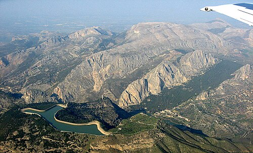

This map shows 8 of the most-searched sights in San Miguel de Allende as photo spots, ranked by how often people search for them: El Chorro, La Parroquia, Templo San Francisco, Instituto Allende and Teatro Ángela Peralta lead the list. Every spot has a pin on the subject and a phone icon showing where to stand, with tips for shooting it on your phone: which lens to use, how to frame it, a settings tip and the best time of day. Directions and Navigate buttons take you to the standing point on foot or by public transport. 3 spots are free to view; the full map is for members.
The 3 free photo spots
1El Chorro

El Chorro is the hillside barrio of San Miguel de Allende, and its best-known corner is the Capilla de la Santa Cruz del Chorro, a 16th-century chapel with a small plaza in front of it. The photo works because everything sits on a slope. From the chapel's exterior atrium the town falls away below you, so one frame can hold old stonework, the open plaza and the rooftops beyond. The chapel's architecture is picturesque in its own right, and the atrium is a quieter place to take a photo than the lookout further up the hill.
If you want more variety, there are two other subjects close by. The Lavaderos del Chorro are a red colonial washing-basin complex with a tower and fountains, framed by small plazas and trees. Parque El Chorro is a wooded hillside park with winding red walls and a switchback street, and it shows the slope itself.
The climb is steep, with long flights of stairs such as the Callejón del Chorro, so allow time and wear comfortable shoes. One guide suggests visiting early in the day. Take a wide shot of the plaza first, then move closer for the chapel's details.
Where it is: El Chorro is a hillside barrio of San Miguel de Allende, on the slope above the town. The chapel has a small plaza, and the hillside town falls away below its exterior atrium.
Shooting it on your phone
Lens: Start with the default lens (1x) for the chapel and its plaza together. Switch to ultra-wide (0.5x) if you want more of the plaza and the town below in one frame. Use telephoto (2x or more, depending on your phone) for stonework and details.
Where to stand: Stand right at the subject: the phone icon on the map marks the spot. From here you see the 16th-century chapel and its small plaza, with the hillside town falling away below the atrium.
Framing: Turn on the gridlines and place the chapel on one third of the frame, with the plaza and the town below filling the rest. Keep your phone level so the walls stay straight, particularly with ultra-wide. For a different view, walk down to the Lavaderos del Chorro for the red washing basins, tower and fountains, or to Parque El Chorro for its winding red walls and tree canopy.
Settings tip: Tap the chapel's walls to set focus, then lower the exposure slider slightly if the sky is washing out. Use the Live Photo option if people cross the plaza, then pick the best frame.
Best time: Go early in the day, as one guide recommends.
2Parroquia de San Miguel Arcángel
The Parroquia de San Miguel Arcángel is the pink church that dominates the middle of San Miguel de Allende. Its neo-Gothic façade and pointed towers are made of pink stone, so the whole front has a warm, soft colour that suits a phone camera, especially in low sun. The best-known view is from Jardín Allende, the town square, where the full façade and both towers fit into one frame with the church filling the background. Guides often call this the classic postcard angle. If the busiest walkway is crowded, step a little to one side of it and the people will stay out of your shot. For something different, Calle Aldama gives a long view down a street of colourful colonial façades, with the church's spires at the far end. El Mirador, higher up, shows the church rising above the town's rooftops. Whichever you choose, keep the phone upright and use the gridlines so the towers stay straight. Aim for golden hour or early morning, when the stone glows and the square is quieter. The church is also lit at night, so an evening shot from the square is worth trying. Plaza events can change how busy it is, so allow a little extra time.
Where it is: In the historic centre of San Miguel de Allende, on the south side of Jardín Allende, the main town square.
Shooting it on your phone
Lens: Start with the ultra-wide (0.5x) if the façade and both towers will not fit at 1x. Switch to the default lens (1x) for a more natural look. Use telephoto (2x-5x, depending on your phone) for details of the spires and stonework.
Where to stand: Stand in Jardín Allende (north-west side of the plaza, across the square from the church). The full pink neo-Gothic façade and towers framed by the town square, with the church filling the background. You will be across the square from the church, which lies to the south. From here the full pink neo-Gothic façade and towers are framed by the square, with the church filling the background.
Framing: Turn on gridlines and line up the towers with the vertical lines, keeping the phone upright so they do not lean. Step slightly off the busiest walkway to keep crowds out of the frame. For a second view, try Calle Aldama, where the colonial façades lead the eye to the spires. Stand at the edge of the pavement rather than in the middle of the cobbled road.
Settings tip: Tap the pink stone to focus, then slide the exposure down a little so the sky does not wash out the colour. After dark, use night mode and hold the phone steady against a bench or wall.
Best time: Golden hour or early morning, when the pink stone glows and the square is quieter. The church is lit at night, so an evening shot is also possible.
8Casa de Allende
Casa de Allende is the house where Ignacio Allende lived. Today it is a museum, with its address given as Cuna de Allende 1. For a visitor with a phone, the draw is the front of the building. A statue of Allende stands on a perch at second-floor level, and it gives the facade a clear focal point that is easy to spot among the nearby buildings.
The best view is from the southwest corner of Jardín Allende, about 54 m from the house. From there you look across at the facade with the statue on its second-floor perch, and the square's southwest corner frames the facade and statue. It is a short, easy spot to add to a walk around the historic centre, and it takes only a minute or two to photograph well.
Start with a wide shot of the whole facade, then move in on the statue. If people are walking across the square, wait a moment for a clear gap rather than cropping them out afterwards. A second angle is worth a look: from the steps of the Iglesia de San Rafael, the house sits behind you and La Parroquia appears at the left of the frame, which makes a different kind of town photograph. The museum is a separate matter from the outside view, so check current rules with the museum before shooting indoors.
Where it is: Casa de Allende is in the historic centre of San Miguel de Allende, near Jardín Allende. The Iglesia de San Rafael and La Parroquia are close by.
Shooting it on your phone
Lens: Start with the default lens (1x) for the facade and the statue together. Switch to telephoto (2x or more, depending on your phone) to bring the statue closer without walking into the road or crossing the square. Use ultra-wide (0.5x) only if you want a lot of the square in the frame, and keep the house away from the edges, where buildings can look stretched.
Where to stand: Stand in Jardín Allende (southwest corner of the square, near the Allende house, looking at its facade). The Casa de Allende facade with its statue of Ignacio Allende on the second-floor perch, framed by the square's southwest corner. The Casa de Allende is to the south-west of you, and from this corner you see its facade with the statue of Ignacio Allende on the second-floor perch.
Framing: Turn on gridlines and place the statue near an upper third line, with the facade filling the rest of the frame. Hold the phone level so the building edges stay upright. Take one wide shot and one telephoto shot of the statue. For a different view, the steps of the Iglesia de San Rafael show the house behind you and La Parroquia at the left of the frame.
Settings tip: Tap on the facade to focus, then slide the exposure down a little if the sky is bright, so the statue and stonework keep their detail. Portrait mode is not needed here.
Best time: Choose a time when the facade is evenly lit and the square is quieter. Check how the light falls on the day, and move a few steps along the corner if glare or shadow covers the statue.
5 more spots for members
These spots are on the map as grey numbered pins. Where to stand, the phone tips, photos and directions for them come with Explorer membership.
- 3Templo de San Francisco · members
- 4Instituto Allende · members
- 5Teatro Ángela Peralta · members
- 6Oratorio de San Felipe Neri · members
- 7Mirador de San Miguel de Allende · members
Get every spot with Explorer membership
Explorer opens every spot on every map in the library: where to stand, how to frame it on your phone and how to get there, plus the Xdatrys Maps app with maps saved on your phone for use without signal. $9.99 a month or $59.99 a year; cancel any time.
Join Explorer Compare free and Explorer
Not ready to join?
Get Pocket Lens, our free daily smartphone travel photography newsletter.
Free, and you can unsubscribe at any time. If the form does not show, sign up on our newsletter page.
Questions
What are the top photo spots in San Miguel de Allende?
The first three on this map are El Chorro, La Parroquia and Templo San Francisco. They are ranked by how often people search for them. The full map has 8.
Where should I stand to photograph El Chorro?
Stand right at El Chorro: the phone icon on the map marks the spot. Start with the default lens (1x) for the chapel and its plaza together.
When is the best time to photograph La Parroquia?
Golden hour or early morning, when the pink stone glows and the square is quieter. The church is lit at night, so an evening shot is also possible.
How do I get to Casa de Allende?
No Underground or tram stops are listed for this spot, so head to the historic centre of San Miguel de Allende and go to Jardín Allende.
Credits
Map data © OpenStreetMap contributors (ODbL); base map built with Protomaps from OpenStreetMap data. Photos from Wikimedia Commons, credited under each photo with their licence. Access rules and opening times change: check before you go.